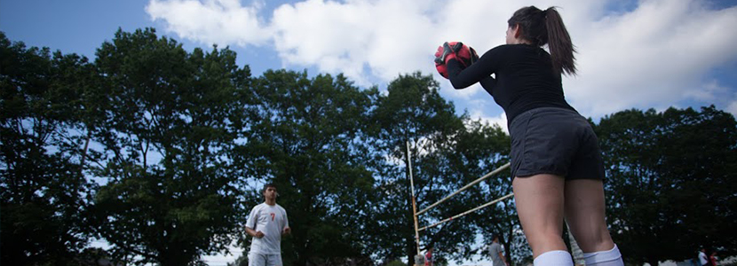

Santos FC Unidos

Santos United FC, trabajando con jóvenes de barrios de Portland a venir juntos como una familia que comparten la misma pasión: fútbol. El equipo fue fundado en agosto de 2012. Cuando comenzaron a Santos, el equipo constaba de 14 a 16 niños y niñas. Santos era un pequeño equipo mixto, pero mientras pasaba el tiempo el equipo empezó a crecer más rápido que pudimos dar cabida a todos. Santos frente a dividir el equipo en dos chicos de la sub-17-18 y una de las chicas de Sub-17-18. En menos de un año, el equipo creció incluso más grande. Ahora tenemos dos chicos de la sub-17-18 del equipo, un equipo de desarrollo chicos u15 jóvenes líderes y un equipo de chicas u15-18. Nunca imaginó Presidente Santos el equipo llegaría a ser cerca de 60 niños que todos vienen de diferentes escuelas y diferentes partes de Portland.
Esta divulgación club es muy diferente de cualquier otro club alcance en la ciudad de Portland, nuestros programas de extensión permite la antigua Santos para asesorar a los jóvenes Santos a convertirse en un ciudadano productivo en la sociedad mediante el deporte fútbol. Una vez que el menor alcance la edad Santos Santos las edades también comenzará el ciclo de la tutoría.
Santos FC es único. Todos los instructores, entrenadores y personal son todos voluntarios.
La Meta de Santos FC
Nuestro objetivo es que los diferentes equipos tanto los hombres y las mujeres ser entrenado por nuestra juventud. Nuestros jugadores de confianza con los demás y con el tiempo que se sientan como una familia. Asimismo, abrigamos la esperanza de conseguir un patrocinio con Adidas; gracias a la ayuda de legado Comunidad alcanzar ese objetivo es acercarnos más y más. Nuestro objetivo final es llegar a convertirse en el primer club de fútbol fuera del alcance; es decir, jugar a un alto nivel competitivo, sino también en un bajo costo para nuestros jugadores.